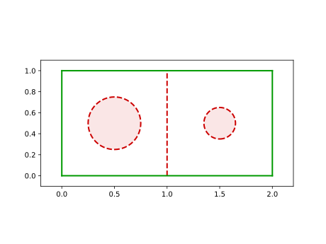
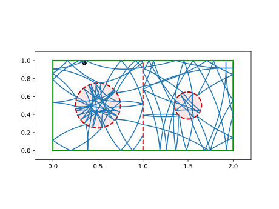

Ray-Splitting
Ray-splitting is a semi-classical approach to the billiard system, giving a wave attribute to the ray traced by the particle. Upon collision a particle may propagate through an obstacle (transmission & refraction) or be reflected. Following the mindset of this package, implementing a ray-splitting billiard requires only three simple steps. We will introduce them and demonstrate them using a simple example in this documentation page.
1. Ray-Splitting Obstacles
The first step is that an Obstacle that supports ray-splitting is required to be present in your billiard table. The only new feature these obstacles have is an additional Boolean field called pflag (propagation flag). This field notes on which side of the obstacle the particle is currently propagating.
The normal vector as well as the distance from boundary change sign depending on the value of pflag. The obstacles Antidot and SplitterWall are the equivalents of disk and wall for ray-splitting.
Let's create a billiard with a bunch of ray-splitting obstacles!
using DynamicalBilliards x, y = 2.0, 1.0 bdr = billiard_rectangle(x, y) sw = SplitterWall([x/2, 0.0], [x/2,y], [-1,0], true) a1 = Antidot([x/4, y/2], 0.25, "Left Antidot") a2 = Antidot([3x/4, y/2], 0.15, "Right Antidot") bd = Billiard(a1, a2, sw, bdr...)
Billiard{Float64} with 7 obstacles:
Left Antidot
Right Antidot
Splitter wall
Bottom wall
Right wall
Top wall
Left wall
using PyPlot plot(bd)

2. The RaySplitter structure
In the second step, you have to define 2+1 functions: transmission probability, refraction angle and optionally new angular velocity after transmission. These functions, as well as which obstacles participate in ray-splitting, are bundled into a special structure:
#
DynamicalBilliards.RaySplitter — Type.
RaySplitter(idxs, transmission, refraction [, newangular]; affect)
Return a RaySplitter instance, used to perform raysplitting. idxs is a Vector{Int} with the indices of the obstacles that this RaySplitter corresponds to.
transmission, refraction and newangular are functions. Let φ be the angle of incidence and ω be the angular velocity and pflag the propagation flag (before transmission). The functions have the following signatures:
transmission(φ, pflag, ω) -> T, transmission probability.refraction(φ, pflag, ω) -> θ, refraction angle. This angle is relative to the normal vector.newangular(ω, pflag) -> newω, new angular velocity after transmission.
The above three functions use the same convention: the argument pflag is the one the obstacle has before transmission. For example, if a particle is outside an Antidot (with pflag = true here) and is transmitted inside the Antidot (pflag becomes false here), then all three functions will be given their second argument (the Boolean one) as true!
affect is a function, and denotes which obstacles of the billiard are affected when transmission occurs at obstacle i (for which obstacles should the field pflag be reversed). Defaults to idxs = (i) -> i, i.e. only the colliding obstacle is affected. If you want many obstacles to be affected you could write idxs = (i) -> SVector(2,3,5), etc. Keep in mind that the only values of i that can be passed into this function are the ones that are given in the argument idxs!
If you want different type of transmission/refraction functions for different obstacles, then you define multiple RaySplitters.
Continuing from the above billiard, let's also create some RaySplitter instances for it.
First define a refraction function
refraction(φ, pflag, ω) = pflag ? 0.5φ : 2.0φ
refraction (generic function with 1 method)
Then, a transmission probability function. In this example, we want to create a function that given some factor p, it returns a probability weighted with p in one direction of ray-splitting and 1-p in another direction.
transmission_p(p) = (φ, pflag, ω) -> begin if pflag p*exp(-(φ)^2/2(π/8)^2) else abs(φ) < π/4 ? (1-p)*exp(-(φ)^2/2(π/4)^2) : 0.0 end end
transmission_p (generic function with 1 method)
Notice also how we defined the function in such a way that critical refraction is respected, i.e. if θ(φ) ≥ π/2 then T(φ) = 0. Although this is necessary from a physical perspective, the code does take care of it by clamping the refraction angle (see below).
Lastly, for this example we will use magnetic propagation. We define functions such that the antidots also reverse the direction and magnitude of the magnetic field.
newoantidot(x, bool) = bool ? -2.0x : -0.5x newowall(x, bool) = bool ? 0.5x : 2.0x
newowall (generic function with 1 method)
Now we create the RaySplitter instances we want
raywall = RaySplitter([3], transmission_p(0.5), refraction, newowall) raya = RaySplitter([1, 2], transmission_p(0.8), refraction, newoantidot)
RaySplitter for indices [1, 2]
transmission: getfield(Main.ex-ray, Symbol("##1#2")){Float64}(0.8)
refraction: Main.ex-ray.refraction
new angular: Main.ex-ray.newoantidot
affect: default
Because we want to use same functions for both antidots, we gave both indices in raya, [1, 2] (which are the indices of the antidots in the billiard bd).
3. Evolution with Ray-Splitting
The third step is trivial. After you have created your RaySplitter(s), you simply pass them into evolve or animate_evolution as a fourth argument! If you have many instances of RaySplitter you pass a tuple of them.
For example,
p = randominside(bd, 1.0) raysplitters = (raywall, raya) xt, yt, vxt, vyt, tt = timeseries(p, bd, 100, raysplitters) plot(bd) plot(xt, yt) scatter(xt[1], yt[1], color = "black")

You can see that at some points the particle crossed the boundaries of the red obstacles, which allow for ray splitting. It is even cooler to animate this motion using animate_evolution!
Resetting the billiard
Notice that evolving a particle inside a billiard always mutates the billiard if ray-splitting is used. This means that you should always set the fields pflag of some obstacles to the values you desire after each call to evolve. If you use the function randominside you must definitely do this!
The function reset_billiard!(bd) turns all pflags to true.
Angle of refraction is clamped
Internally we clamp the output of the angle of refraction function. Let c = DynamicalBilliards.CLAMPING_ANGLE (currently c = 0.1). We clamp θ to -π/2 + 0.1 ≤ θ ≤ π/2 - 0.1. This is so that the relocating algorithm does not fall into an infinite loop.
You can change the value of `c` but very small values can lead to infinite loops in extreme cases.
The Ray-Splitting Algorithm
In this section we describe the algorithm we follow to implement the ray-splitting process. Let T denote the transmission function, \theta the refraction function and \omega_{\text{new}} the new angular velocity function. The following describes the process after a particle has reached an obstacle that supports ray-splitting.
- Find the angle of incidence \phi' = \pi - \arccos(\vec{v} \cdot \vec{n}) = \arccos(\vec{v} \cdot (-\vec{n})) with \vec{n} the normal vector at collision point. Notice that we use here -\vec{n} because the velocity is opposing the normal vector before the collision happens. Using -\vec{n} gives the angle between 0 and \pi/2 instead of \pi/2 to \pi.
- Find the correct sign of the incidence angle, \phi = \pm \phi'. Specifically, use the cross product: if the third entry of \vec{v} \times \vec{n} is negative, then have minus sign. The "correct" sign debates on whether the velocity vector is to the right or to the left of (-\vec{n}). This is important for finding the correct transmission angle and/or probability.
- Check if T(\phi, \verb|pflag|, \omega) > \text{random}(). If not, do standard specular reflection.
- If ray-splitting happens, then relocate the particle so that it is on the other side of the colliding obstacle. This contrasts the main evolution algorithm of this billiard package.
- Re-compute the correct angle of incidence, as the position of the particle generally changes with relocating.
- Find refraction angle \theta(\phi, \verb|pflag|, \omega). Notice that this is a relative angle with respect to the normal vector. Also notice that \theta may have opposite sign from \phi. It depends on the user if they want to add anomalous refraction.
- Set
obstacle.pflag = !obstacle.pflagfor all obstacles affected by the currentRaySplitter. This reverses \vec{n} to -\vec{n} as well! So from now on \vec{n} is the opposite than what it was at the beginning of the algorithm! - Find the refraction angle in absolute space. First find a = \text{atan}(n_y, n_x) and then set \Theta = a + \theta.
- Perform refraction, i.e. set the particle velocity to the direction of \Theta.
- Scale the magnetic field, i.e. set
p.omega= \omega_{\text{new}}(\omega, \verb|!pflag|). It is important to note that we use!pflagbecause we have already changed thepflagfield.
Physics of the Ray-Splitting Functions
If T is the transmission probability function, then the condition for transmission is simply: T(φ, pflag, ω) > rand(). If it returns true, transmission (i.e. ray-splitting) will happen.
The functions given to RaySplitter should have some properties in order to have physical meaning. In order to test if the RaySplitter you have defined has physical meaning, the function isphysical is provided
#
DynamicalBilliards.isphysical — Function.
isphysical(raysplitter(s))
Return true if the given raysplitters have physically plausible properties.
Specifically, check if (φ is the incidence angle, θ the refraction angle):
- Critical angle means total reflection: If θ(φ) ≥ π/2 then Tr(φ) = 0
- Transmission probability is even function: Tr(φ) ≈ Tr(-φ) at ω = 0
- Refraction angle is odd function: θ(φ) ≈ -θ(-φ) at ω = 0
- Ray reversal is true: θ(θ(φ, pflag, ω), !pflag, ω) ≈ φ
- Magnetic conservation is true: (ωnew(ωnew(ω, pflag), !pflag) ≈ ω
Snell's Law
In classical geometric optics, the refraction of a ray of light moving from one medium to another is described by Snell's law. For an angle of incidence of \phi, the refraction angle \theta is determined by the equation
where n and n' are the respective refractive indices of the media.
To easily simulate these relations in DynamicalBilliards, the function law_of_refraction can be used to set up ray-splitting according to this law.
#
DynamicalBilliards.law_of_refraction — Function.
law_of_refraction(n1, n2 = 1.0) -> t, r
Create transmission and refraction functions t, r that follow Snell's law, i.e. the transmission probability is set to 1.0 except for the case of total internal reflection.
n1 is the index of refraction for the pflag = false side of an obstacle, while n2 is the index of refraction for pflag = true.
Using the functions returned by law_of_refraction, we can set up a RaySplitter for a billiard.
using DynamicalBilliards, PyPlot # Create a circular "lens" o = Antidot(SVector(1.0, 0.75), 0.5) # in a rectangular box bd = Billiard(billiard_rectangle(2.5, 1.5)..., o) # create a RaySplitter using law of refraction trans, refra = law_of_refraction(1.5) rs = (RaySplitter([5], trans, refra),)
(RaySplitter for indices [5],)
We now animate the evolution of an array of particles on parallel trajectories to demonstrate the refractive properties of the spherical lens
# create parallel particles ps = [Particle(0.1, y, 0.0) for y in 0.4:0.05:1.1] # animate animate_evolution(ps, bd, 2.0, rs, colors = ["C0" for i ∈ 1:length(ps)], tailtime=2.5, savename = "lens")
Example of Affecting Multiple Obstacles
Here we will show an application of inverse billiards, where particles go in and out of a billiard, while taking advantage of the existence of a magnetic field outside to return.
As always, we define the ray-splitting functions:
using DynamicalBilliards, PyPlot trans(args...) = 1.0 # always perfect transmission refra(φ, pflag, ω) = pflag ? 0.8φ : 1.25φ # refraction angle neww(ω, pflag) = pflag ? 2.0 : 0.4
neww (generic function with 1 method)
Now, when we define the RaySplitter instance we will choose a different value for affect:
ray = RaySplitter([1,2,3,4], trans, refra, neww, affect = (i) -> SVector(1,2,3,4))
RaySplitter for indices [1, 2, 3, 4]
transmission: Main.ex-ray.trans
refraction: Main.ex-ray.refra
new angular: Main.ex-ray.neww
affect: getfield(Main.ex-ray, Symbol("##3#4"))()
We initialize a simple rectangular billiard and a particle
bd = billiard_rectangle(setting = "ray-splitting") p = MagneticParticle(0.4, 0.6, 0.0, 0.4)
MagneticParticle{Float64}
position: [0.4, 0.6]
velocity: [1.0, 0.0]
ang. velocity: 0.4
and we animate its evolution, by first zooming out of the billiard
plot(bd) xlim(-1, 2); ylim(-1, 2); animate_evolution(p, bd, 10.0, (ray,); ax = gca(), savename = "inverse", tailtime = 3.0)